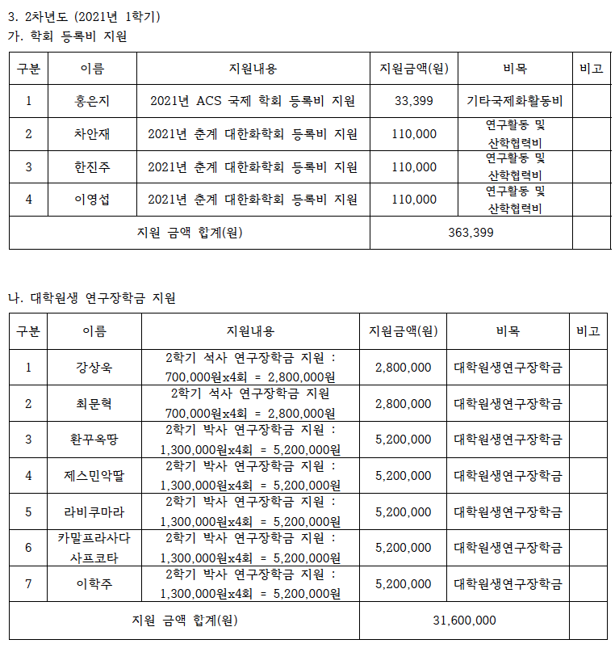

Publications
Diacetylene-containing Dual-functional Liquid Crystal Epoxy Resin: Strategic Phase Control for Topochemical Polymerization of Diacetylenes and Thermal Conductivity Enhancement
Macromolecules (in press)
Md Monir Hossain, ARINOLA ISA OLAMILEKAN, Hyun-Oh Jeong, Hongjin Lim, Young-Kyeong Kim, Hyunjin Cho, Hyeon Dam Jeong; Md. Akherul Islam; Munju Goh; Nam-Ho You; Myung Jong Kim, Siyoung Choi, Jae Ryang Hahn, Hyeonuk Yeo, Se Gyu Jang
An end-on bis(μ-hydroxido) dimanganese(II,III) azide complex for C–H bond and O–H bond activation reactions
Chem. Commun. 58 (2022) 4623-4626
H. Jeon, J. Kim, J. Kim, K.-B. Cho, S. Hong
Structure and Reactivity of Non-Porphyrinic Terminal Manganese(IV)–Hydroxide Complexes in Oxidative Electrophilic Reaction
Inorg. Chem. 61 (2022) 4292-4301
Y. Park, S. Kim, K. Kim, B. Shin, Y. Jang, K.-B. Cho, J. Cho
Nickel Catalyzed NO Group Transfer Coupled with NOx Conversion
J. Am. Chem. Soc. 144 (2022) 4585-4593
S. Padmanaban, J. Choi, H. Vazquez-Lima, D. Ko, D. Yoo, J. Gwak, K.-B. Cho, Y. Lee
Pd@PdS core shell nanocubes for photocatalytic degradation of methylparaben
Materials Letters 309 (2022) 131444
S. Yoo, H. Mohan, H. S. Oh, G. Kim J. R. Hahn, T. Shin

Highly Efficient and Sustainable ZnO/CuO/g-C3N4 Photocatalyst for Wastewater Treatment under Visible Light through Heterojunction Development
Catalysts 12 (2022) 151
Md. A. Hanif, J. Akter, Y. S. Kim, H. G. Kim, J. R. Hahn, L. K. Kwac
Mono- and Dinuclear Zinc Complexes Bearing Identical Bis(Thiosemicarbazone) Ligand That Exhibit Alkaline Phosphatase-Like Reactivity
J. Biol. Inorg. Chem. 27 (2022) 37-47
H. Jeon, H. Vazquez-Lima, H. Jeong, K.-B. Cho, S. Hong
Nonheme Iron Imido Complexes Bearing a Non-Innocent Ligand: A Synthetic Chameleon Species in Oxidation Reactions
Chem. Eur. J. 27 (2021) 17495-17503
X.-X. Li, X. Lu, J. W. Park, K.-B. Cho, W. Nam
Electronic Properties and Reactivity Patterns of High-Valent Metal-Oxo Species of Mn, Fe, Co, and Ni
Bull. Korean Chem. Soc., 41 (2021) 1506-1512
X.-X. Li, K.-B. Cho, W. Nam
How Does Lewis Acid Affect the Reactivity of Mononuclear High-Valent Chromium-Oxo Species? A Theoretical Study
Bull. Korean Chem. Soc. 41 (2021) 1501-1505
Y. Choi, B. Pandey, X.-X. Li, Y.-M. Lee, K.-B. Cho and W. Nam
Visible-light-driven enhanced photocatalytic performance using cadmiumdoping of tungsten (VI) oxide and nanocomposite formation with graphitic carbon nitride disks
Applied Surface Science 565 (2021) 150541
Md. A. Hanif, J. Akter, Md. A. Islam, K. P. Sapkota, J. R. Hahn
Rapid and Highly Sensitive Hairpin Structure-Mediated Colorimetric Detection of miRNA
Analytica Chimica Acta 1176 (2021) 338765
M. H. Choi, Y. J. Seo
Polymerase-mediated synthesis of p-vinylaniline–coupled fluorescent DNA for the sensing of nucleolin protein–c-myc G-quadruplex interactions
Organic & Biomolecular Chemistry 19 (2021) 5788-5793
G. S. Ravi Kumara, Y. J. Seo
Direct and Selective Metal-Free N6-Arylation of Adenosine Residues for Simple Fluorescence
Chem. Commun 57 (2021) 5450-5453
G. S. Ravi Kumara, A. Pandith, Y. J. Seo
Combined recombinase polymerase amplification/rkDNA–graphene oxide probing system for detection of SARS-CoV-2
Analytica Chimica Acta 1158 (2021) 338390
M. H. Choi, J. Lee, Y. J. Seo
Loop-Mediated Fluorescent Probe for Selective Discrimination of Parallel and Antiparallel G-Quadruplexes
Bioorganic Medicinal Chemistry 35 (2021) 116077
A. Pandith, U. Nagarajachari, R. G. Siddappa, S. Lee, C. J. Park, K. Sannathammegowda, and Y. J. Seo
Subnanometer Thick Carbon-Layer-Encapsulated Silver Nanoparticles Selectively Neutralizing Human Cancer Cells and Pathogens through Controlled Release of Ag+ Ions
ACS Applied Nano Materials 4(7) (2021) 7295-7308
Md. A. Islam, K. P. Sapkota, T. A. Riaz, Md. A. Hossain, Md. A. Hanif, J. Akter, Md. M. Hossain, S. G. Jang, H-J. Chae, J. R. Hahn
Molecular Weight Dependent Morphological Transitions of Bottlebrush Block Copolymer Particles: Experiments and Simulations
ACS Nano 57 (2021) 5513-5522
E. J. Kim, J. J. Shin, T. Do, G. S. Lee, J. Park, V. Thapar, J. Choi, J. Bang, G-R. Yi, S-M. Hur, J. G. Kim, B. J. Kim
Multiferroicity of Non-Janus MXY (X=Se/S, Y=Te/Se) Monolayers with Giant In-Plane Ferroelectricity
The Journal of Physical Chemistry C 125 (2021) 7458-7565 (chosen as a cover article)
H. Abbas, T. T. Debela, J. R. Hahn, H. S. Kang
Selective growth of Ti3+/TiO2/CNT and Ti3+/TiO2/C nanocomposite for enhanced visible-light utilization to degrade organic pollutants by lowering TiO2-bandgap
Scientific Reports 11 (2021) 9490
J. Akter, Md. A. Hanif, Md. A. Islam, K. P. Sapkota, J. R. Hahn
Metal-Ligand Cooperative Transformation of Alkyl Azide to Isocyanate Occurring at a Co-Si Moiety
Chem. Comm. 57 (2021) 3219-3222
J. So, S. Kim, K.-B. Cho and Y. Lee
Chemical Assembly of Copper Oxide and Single Walled Carbon Nanotubes for Enhanced Photocatalytic Dye Degradation under Solar Light Irradiation
Materials Proceedings 4 (2021) 18
K. P. Sapkota, Md. A. Islam, Md. A. Hanif, J. Akter, I. Lee, J. R. Hahn
Ligand Architecture Perturbation Influences the Reactivity of Nonheme Iron(V)-Oxo TAML Complexes: A Combined Experimental and Theoretical Study.
Inorg. Chem. 60 (2021) 4058-4067
X.-X. Li, S.-S. Xue, X. Lu, M. S. Seo, Y.-M. Lee, W.-S. Kim, K.-B. Cho and W. Nam
Formation of chemical heterojunctions between ZnO nanoparticles and singlewalled carbon nanotubes for synergistic enhancement of photocatalytic activity
Journal of Photochemistry & Photobiology, A: Chemistry 413 (2021) 113260
Md. A. Hanif, J. Akter, I. Lee, Md. A. Islam, K. P. Sapkota, H. G. Abbas, J. R. Hahn
Hierarchical Nanocauliflower Chemical Assembly Composed of Copper Oxide and Single-Walled Carbon Nanotubes for Enhanced Photocatalytic Dye Degradation
Nanomaterials 11(3) (2021) 696
K. P. Sapkota, Md. A. Islam, Md. A. Hanif, J. Akter, I. Lee, J. R. Hahn
Study of Green Solvents for Ruthenium Alkylidene Mediated Ring‐Opening Metathesis Polymerization
Bulletin of the Korean Chemical Society 42(3) (2021) 502-505
H. G. Shin, H. S. Lee, E. J. Hong, J. G. Kim

Kinetically controlled selective synthesis of Cu2O and CuO nanoparticles toward enhanced degradation of methylene blue using ultraviolet and sun light
Materials Science in Semiconductor Processing 123 (2021) 105570
J. Akter, K. P. Sapkota, Md. A. Hanif, Md. A. Islam, H. G. Abbas, J. R. Hahn
Divergent strategy for the synthesis of bottlebrush polymers via postpolymerization modification of macromonomer
Journal of Polymer Science 58 (2020)
N. J. Lee, D. Kim, K. Yoo, Y. Yu, B-S. Kim, J. G. Kim
Mechanistic dichotomies in redox reactions of mononuclear metal–oxygen intermediates
Chem. Soc. Rev. 49 (2020) 8988-9027
S. Fukuzumi, K.-B. Cho, Y.-M. Lee, S. Hong, W. Nam

Heterojunction formation between copper(II) oxide nanoparticles and single-walled carbon nanotubes to enhance antibacterial performance
International Journal of Pharmaceutics 590 (2020) 119937
K. P. Sapkota, Md. M. Hassan, S. Shrestha, Md. A. Hanif, Md. A. Islam, J. Akter, H. G. Abbas, J. R. Hahn

Multifunctional aminoethylpiperazine-modified graphene oxide with high dispersion stability in polar solvents for mercury ion adsorption
Journal of Industrial and Engineering Chemistry 90 (2020) 224-231
J-U. Jin, H. Yeo, J. R. Hahn, J. Yu, B-C. Ku, N-H. You

Propargyl amine-selective dual fluorescence turn-on method for post-synthetic labeling of DNA
Chem. Commun. 56 (2020) 3199
M. H. Choi, G. S. Ravi Kumara, Y. J. Seo

Highly Fluorescent Morpholine Naphthalimide Deoxyuridine Nucleotide for the Detection of miRNA 24-3P through Rolling Circle Amplification
Analyst 145 (2020) 4777
G. S. Ravi Kumara, A. Pandith, Y. J. Seo

rkDNA–graphournal of Indusene oxide as a simple probe for the rapid detection of miRNA21
Bioorg Med Chem Lett 30 (2020) 127398
M. H. Choi, G. S. Ravi Kumara, Y. J. Seo
Conferences
Comparing High-Valent Fe(IV)O Ligand Radical Cation Species with Mono and Fused Di-Porphyrin Ligands Using Density Functional Theory
The 2020 International Chemical Congress of Pacific Basin Societies (Pacifichem), December, 2021
Youngseob Lee, Kyung-Bin Cho
Mechanochemical Solid State Polymer Synthesis (invited)
IUPAC MACRO2020+, May, 2021
Jeung Gon KIM
Synthesis of Backbone Shiftable Janus Core-Shell Bottlebrush Copolymer
IUPAC MACRO2020+, May, 2021
Jiyun NAM, YongJoo KIM, Jeung Gon KIM, Myungeun SEO
Synthesis of Thiolated-Poly Ethylene Glycol via Post-Modification Polymerization
IUPAC MACRO2020+, May, 2021
Se Jong KIM, Jeung Gon KIM
Multifunctional Polymer Synthesis: Sequential Postpolymerization Modification of Aldehyde Polymers
IUPAC MACRO2020+, May, 2021
Hyowon LEE, Jeung Gon KIM
Chemical Upcycling of Waster Ploy(bisphenol A carbonate) to 1,4,2-dioxazolones
IUPAC MACRO2020+, May, 2021
Hyun Jin JUNG, Sora PARK, Yeji YOO, Ek Raj BARAL, Jun Hee LEE, Jeung Gon KIM
DFT reaction mechanism study for the phenoxide migration at a Nickel(II) - tridentate bis(phosphinophenyl)phosphido ligand
127회 대한화학회 학술발표회, Apr. 2021
Hugo Vazquez Lima, Kyung-Bin Cho
Comparing Compound I species with mono and fused di-porphyrin ligands using Density Functional Theory
127회 대한화학회 학술발표회, Apr. 2021
Youngseob Lee, Kyung-Bin Cho
Mechanochemical Solid-State Polymerizations: What we learned so far
EU-COST ACTION – Mechanochemistry for Sustainable Industry Webinar, Mar. 2021
Jeung Gon Kim
Mechanochemical living anionic polymerization with solid state initiator using ball mill
2021 Spring ACS National Meeting, April 2021
Kwangho Yoo, Byeong-Su Kim, Jeung Gon Kim
Ruthenium mediated ring-opening metathesis polymerization using green solvents
2021 Spring ACS National Meeting, April 2021
Hyungyu Shin, Hyun Sub Lee, Eunji Hong, Jeung Gon Kim
Multifunctional polymer synthesis: Sequential postpolymerization modification of aldehyde polymers
2021 Spring ACS National Meeting, April 2021
Hyowon Lee, Jeung Gon Kim
Synthesis of thiolated-poly ethylene glycol via post-modification polymerization
2021 Spring ACS National Meeting, April 2021
Se Jong Kim, Jeung Gon Kim
Solid-state mechanochemical ring-opening metathesis polymerization
2021 Spring ACS National Meeting, April 2021
Gue Seon Lee, Jeung Gon Kim
Three-dimensional confined assembly of bottlebrush block copolymers: the effect of molecular weight on the particle morphology
2021 Spring ACS National Meeting, April 2021
Eun Ji Kim, Jaeman Shin, Taeyang Do, Juhae Park, Su-Mi Hur, Jeung Gon Kim, Bumjoon Kim
Kinetically controlled selective preparation of Cu2O and CuO nanoparticles: Rapid degradation of methylene blue using UV and solar light
2021 Spring ACS National Meeting, April 2021
J. Akter, Md. A. Hanif, Md. A. Islam, K. P. Sapkota, I. Lee, J. R. Hahn
Coupling ZnO with single-walled carbon nanotubes leading to solar-light-driven proficient photocatalyst for the decomposition of an organic dye methylene blue
2021 Spring ACS National Meeting, April 2021
K. P. Sapkota, I. Lee, Md. A. Islam, Md. A. Hanif, J. Akter, J. R. Hahn
Chemical Upcycling of Waster Poly(bisphenol A carbonate) to 1,4,2-dioxazolone
한국 고분자 학회 2021 춘계학술대회, April 2021
정현진, 김정곤
Ruthenium Mediated Ring-Opening Metathesis Polymerization using Green Solvents
한국 고분자 학회 2021 춘계학술대회, April 2021
홍은지, 김정곤
Synthesis of thiolated-Poly Ethylene Glycol via Post-modification polymerization
한국 고분자 학회 2021 춘계학술대회, April 2021
김세종, 김정곤
Multifunctional Polymer Synthesis: Sequential Postpolymerization Modification of Aldehyde Polymers
한국 고분자 학회 2021 춘계학술대회, April 2021
이효원, 김정곤
Molecular Weight Dependent Morphological Transition of Bottlebrush Block Copolymer Particles
한국 고분자 학회 2021 춘계학술대회, April 2021
김은지, 신재만, 도태양, 이규선, 박주혜, 허수미, 김정곤, 김범준
Heterojunction Generation between Copper Oxide and Single-Walled CarbonNanotubes Leading to Nano-cauliflower Chemical Assembly for EnhancedPhotocatalytic Dye Degradation
2nd International Online-Conference on Nanomaterials, Nov. 2020
K. P. Sapkota, Md. A. Islam, Md. A. Hanif, J. Akter, H. G. Abbas, J. R. Hahn
An Efficient Preparation Method of ZnO Nanoparticles toward EnhancedPhotocatalytic and Antibacterial Activity
2nd International Online-Conference on Nanomaterials, Nov. 2020
Md. A. Hanif, J. Akter, Md. A. Islam, K. P. Sapkota, H. G. Abbas, J. R. Hahn
A nanocomposite of silver nanoparticles and carbon nanospheres forphotocatalytic degradation of methylene blue under UV irradiation
2nd International Online-Conference on Nanomaterials, Nov. 2020
Md. A. Islam, Md. A. Hanif, K. P. Sapkota, J. Akter, H. G. Abbas, J. R. Hahn
Structural Transformation in Liquid Tellurium from Stillinger-Weber Potential
2nd International Online-Conference on Nanomaterials, Nov. 2020
H. G. Abbas, K. P. Sapkota, Md. A. Islam, Md. A. Hanif, J. Akter, J. R. Hahn
Theoretical aspects of C-H activation reactions by biomimetic metal-oxo species. Things are complicated (invited)
제22회 대한화학회 광주전남전북지부 학술발표회, Nov. 2020
K-B. Cho
Synthesis and Characterization of ZnO Nanoparticles with the Evaluation of Photocatalytic and Antibacterial Performance
제22회 대한화학회 광주전남전북지부 학술발표회, Nov. 2020
Md. A. Hanif, J. Akter, Md. A. Islam, K. P. Sapkota, H. G. Abbas, J. R. Hahn
Synthesis of Cu2O Nanoparticles for Rapid Degradation of Methylene Blue using UV and Solar Light
제22회 대한화학회 광주전남전북지부 학술발표회, Nov. 2020
J. Akter, Md. A. Hanif, Md. A. Islam, K. P. Sapkota, H. G. Abbas, J. R. Hahn,
Photocatalytic Activity of Silver Nanoparticles and Carbon Nanospheres Composite for the Degradation of Methylene Blue under UV Irradiation
제22회 대한화학회 광주전남전북지부 학술발표회, Nov. 2020
Md. A. Islam, Md. A. Hanif, K. P. Sapkota, J. Akter, H. G. Abbas, J. R. Hahn
Post-polymerization modification of aldehyde polymers: functionalization of aldehyde polymers
126회 대한화학회 학술발표회, Oct. 2020
H. W. Lee, J. G. Kim
Enzymatic primer extension of unnatural nucleotide into DNA and its combination with Graphene Oxide for detection of miRNA21
126회 대한화학회 학술발표회, Oct. 2020
M. H. Choi, Y. J. Seo
Napthalimide appended deoxyuridine nucleotide synthesis and application in detection of miRNA 24-3P through Rolling Circle Amplification (invited)
126회 대한화학회 학술발표회, Oct. 2020
Ravi Kumara G. Siddappa, Y. J. Seo
Well-Defined Norbornenyl-Terminated Poly(alkyl methacrylate)s: Their Synthesis by Group Transfer Polymerization and Graft-through Ring-Opening Metathesis Polymerization
126회 대한화학회 학술발표회, Oct. 2020
G. S. Lee, J. G. Kim
Mechanochemical Post-Polymerization Modification of Ammonium-Functionalized Polyethers
126회 대한화학회 학술발표회, Oct. 2020
J. W. Lee, J. G. Kim, B-S. Kim
Patents
표적 핵산의 검출을 위한 DNA 구조체, 핵산 검출용 조성물 및 이를 이용한 핵산 검출 방법
Korean Intellectual Property Office, (출원번호 10-2021-0017473) Feb. 08, 2021
서영준, 최문혁
핵산 형광 표지용 조성물 및 이를 이용한 핵산의 형광 표지 방법
Korean Intellectual Property Office, (출원번호 10-2021-0067406) May 26, 2021
서영준, 라비 쿠마라
파이로포스페이트 화합물 감지용 신규 화합물 및 이의 제조방법
Korean Intellectual Property Office, (출원번호 10-2021-0016938) Feb. 05, 2021
서영준, 라비 쿠마라
핵산 검출 방법
Korean Intellectual Property Office, (출원번호 10-2021-0028198) Mar. 03, 2021
서영준, 최문혁
인공 유전자 염기 쌍을 형성하기 위한 듀트리움이 도입된 인공염기 화합물
Korean Intellectual Property Office, (출원번호 10-2021-0029011) Mar. 04, 2021
서영준
등온 증폭 시스템 및 파이로포스페이트 발색 탐지체의 조합을 이용한 현장진단용 유전자 분자 진단 시스템
Korean Intellectual Property Office, (출원번호 10-2021-0031115) Mar. 10, 2021
서영준
참여인력지원내역

글로컬 미래 화학인재 교육 연구팀 자료 링크
Last updated in Jan. 2022